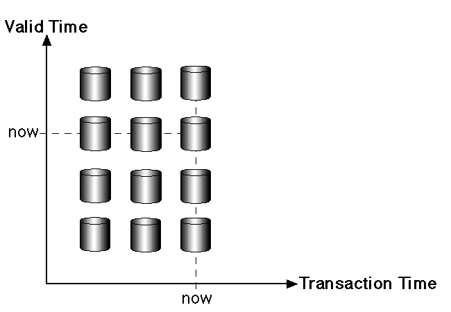

ADMT Notes
Data warehouse

A data warehouse is a type of data management system that is designed to enable and support business intelligence (BI) activities, especially analytics.
Principles of Data Warehouse Architecture
- Separation of layers
- Scalable
- Resilient to change
- Extensive and support new integrations
- Secure
- Manageable
The Three Tiers of Data Warehouse Architecture
- Single-tiered architecture
- Two-tiered architecture
- Metadata layer
- Data staging
- Data warehouse layer
- Three-tiered architecture
Best Practices for Data Warehouse Architecture
- Utilize materialized views to reduce latency and improve performance
- Separate compute and storage duties
- Know your data model
- Determine your organization’s data flow
- Employ automation for faster and agile operations
- The integration layer should be source agnostic
Data Mart

A data mart is a subset of a data warehouse oriented to a specific business line. Data marts contain repositories of summarized data collected for analysis on a specific section or unit within an organization, for example, the sales department
Data Mart and Data Warehouse Difference
| Category | Data Mart | Data Warehouse |
|---|---|---|
| Focus | A single subject or functional organization area | Enterprise-wide repository of disparate data sources |
| Data Sources | Relatively few sources linked to one line of business | Many external and internal sources from different areas of an organization |
| Size | Less than 100 GB | 100 GB minimum but often in the range of terabytes for large organizations |
| Normalization | No preference between a normalized and denormalized structure | Modern warehouses are mostly denormalized for quicker data querying and read performance |
| Decision Types | Tactical decisions pertaining to particular business lines and ways of doing things | Strategic decisions that affect the entire enterprise |
| Cost | Typically from $10,000 upwards | Varies but often greater than $100,000; for cloud solutions costs can be dramatically lower as organizations pay per use |
| Setup Time | 3-6 months | At least a year for on-premise warehouses; cloud data warehouses are much quicker to set up |
| Data Held | Typically summarized data | Raw data, metadata, and summary data |
Data transformation
Data transformation typically involves several steps, including:
- Data cleaning: Removing or correcting errors, inconsistencies, and missing values in the data.
- Data integration: Combining data from multiple sources, such as databases and spreadsheets, into a single format.
- Data normalization
- Data reduction: Reducing the dimensionality of the data by selecting a subset of relevant features or attributes.
- Data discretization: Converting continuous data into discrete categories or bins.
- Data aggregation: Combining data at different levels of granularity, such as by summing or averaging, to create new features or attributes.
- Data transformation is an important step in the data mining process as it helps to ensure that the data is in a format that is suitable for analysis and modeling, and that it is free of errors and inconsistencies.
| Category | Advantages | Disadvantages |
|---|---|---|
| Data Quality | Improves data quality by removing errors, inconsistencies, and missing values | Time-consuming process, especially when dealing with large datasets |
| Data Integration | Facilitates data integration from multiple sources, which can improve the accuracy and completeness of the data | Can be a complex process, requiring specialized skills and knowledge to implement and interpret the results |
| Data Analysis | Improves data analysis by preparing the data for analysis and modeling through normalization, dimensionality reduction, and discretization | Data loss, such as when discretizing continuous data, or when removing attributes or features from the data |
| Data Security | Increases data security by masking sensitive data or removing sensitive information from the data | Data transformation can result in bias if the data is not properly understood or used |
| Algorithm Performance | Enhances data mining algorithm performance by reducing the dimensionality of the data and scaling the data to a common range of values | Can be an expensive process, requiring significant investments in hardware, software, and personnel |
Join Operation
Join operations are used in databases to combine data from two or more tables. There are several types of join operations, including nested-loop join, block nested-loop join, indexed nested-loop join, and merge join.
Nested-Loop Join
The nested-loop join is the simplest physical implementation of joining two tables.
for each tuple tr in do begin
for each tuple ts in s begin
test pair(tr, ts) to see if they satisfy the join condition
if they do, add tr . ts to the result;
end
end
Block Nested-Loop Join
If the buffer is too small to hold either relation entirely in memory.
We can still obtain a major saving in block accesses if we process the relations on a per-block basis, rather than on a per tuple basis.
for each block Br of r do begin
for each block Bs of s do begin
for each tupled tr in Br do begin
for each tuple tr in Bs do begin
test pair(tr, ts) to see if they satisfty the join condition
if they do, add tr . ts to the result
end
end
end
end
Indexed Nested-Loop Join
Nested-loop join, if an index is available on the inner loop’s join attribute, index lookups can replace file scans.
for each tuple r in R do
for each tuple s in S in the index lookup do
yield tuple <r,s>
end
end
Merge Join
The merge join is the most effective of all join operators.
CAP theorem

The CAP theorem, also known as Brewer's theorem, is a fundamental principle in distributed systems that states that it is impossible for a distributed data store to simultaneously provide more than two out of the following three guarantees:
- Consistency: All nodes in the system have the same data at the same time.
- Availability: Every request to the system receives a response, even if some nodes are failing.
- Partition Tolerance: The system continues to operate despite network failures or split-brain scenarios.
ACID vs BASE

| Aspect | ACID | BASE |
|---|---|---|
| Full Form | Atomicity Consistency Isolation Durability | Basically Available Soft state Eventual consistency |
| Consistency | Emphasizes immediate consistency of data | Allows for eventual consistency of data |
| Availability | May sacrifice availability for consistency | Emphasizes high availability, even at the cost of consistency |
| Partition Tolerance | May not handle network partitions well | Handles network partitions well |
| Use Cases | Critical applications requiring strict consistency, e.g., financial systems | Applications requiring high availability and scalability, e.g., social media platforms, e-commerce websites |
| Trade-offs | Prioritizes consistency over availability | Prioritizes availability over consistency |
| Examples | SQL databases are typically ACID compliant | NoSQL databases like MongoDB, Cassandra, and Redis adhere to BASE principles |
Temporal Database

A temporal database is a database that needs some aspect of time for the organization of information.
In the temporal database, each tuple in relation is associated with time.
It stores information about the states of the real world and time.
Terminologies in the temporal database:
- Valid Time: The valid time is a time in which the facts are true with respect to the real world.
- Transaction Time: The transaction time of the database is the time at which the fact is currently present in the database.
- Decision Time: Decision time in the temporal database is the time at which the decision is made about the fact.
Applications of Temporal Databases
- Finance: It is used to maintain the stock price histories.
- Healthcare: The histories of the patient need to be maintained for giving the right treatment.
- Banking: For maintaining the credit histories of the user.
Temporal Relation
A temporal relation is defined as a relation in which each tuple in a table of the database is associated with time, the time can be either transaction time or valid time.
Types of Temporal Relation
- Uni-Temporal Relation: The relation which is associated with valid or transaction time is called Uni-Temporal relation. It is related to only one time.
- Bi-Temporal Relation: The relation which is associated with both valid time and transaction time is called a Bi-Temporal relation. Valid time has two parts namely start time and end time, similar in the case of transaction time.
- Tri-Temporal Relation: The relation which is associated with three aspects of time namely Valid time, Transaction time, and Decision time called as Tri-Temporal relation.
Spatial Database

Spatial data support in database is important for efficiently storing, indexing and querying of data on the basis of spatial location.
Two types of Spatial data are particularly important:
Computer-aided design (CAD)data
Which include spatial information about how objects-such as building, cars, or aircraft-are constructed. Other important examples of computer-aided-design databases are integrated-circuit and electronic-device layouts.
Geographic data
Such as road maps, land-usage maps, topographic elevation maps, political maps showing boundaries, land-ownership maps, and so on.
Geographical information system are special purpose databases for storing geographical data.
Types of geographical data :
- Raster data
- Vector data
Raster data
Raster data consist of pixels also known as grid cells in two or more dimensions. For example, image of Satellites , digital pictures, and scanned maps.
Vector data
Vector data consist of triangles, lines, and various geometrical objects in two dimensions and cylinders, cuboids, and other polyhedrons in three dimensions. For example, building boundaries and roads.